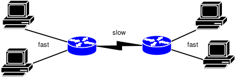

...making Linux just a little more fun!
Darshak [darshak at elitecore.com]
Fri, 05 Jan 2007 15:25:20 +0530
HI, I have no CDROM/Floppy. My red-hat linux ISO [ 2.6]are there into HDD.Harddisk also contains red-hat linux-kernel2.4 I want to install that 2.6 kernel into hard-disk. Can I do this? In fedora -core while installation we can use From hard-disk.Can i make my USB pendrive such that it also boots and asks the location of hard-disk.And then continues installation.
Thanxs
Darshak
jerry [needadamnjob2003 at yahoo.com]
Thu, 4 Jan 2007 07:47:28 -0800 (PST)
the boards ive seen say it does also im kinda new an defanitly no teckie or coder can ya help i dont use this email any more so pls answer this an send it to gmail its pacman269@gmail.com thanks o if you need to no im tryn to use christian ubuntu and knoppix 5 i guess its the new one out the laptop is a A22m stinkpad ibm bois says 800m an 384mof mem but everest says 647m an 384m for mem so i dont no what one is rite any way you look at it its old........ thanks pac.
[j.bakshi at icmail.net]
Mon, 15 Jan 2007 21:53:24 -0800
First of all thanks to Ramon van Alteren for make me familiar with some more linux router features.
now one more question is flying around my linux head  I have seen in suse that after plugin the usb pen drive ;
konqueror fires up automatically opening the drive.
I like to know the inner secret so that I can implement this
in my debian linux box.
I have seen in suse that after plugin the usb pen drive ;
konqueror fires up automatically opening the drive.
I like to know the inner secret so that I can implement this
in my debian linux box.
thanks, Happy Linuxing
[ Thread continues here (3 messages/2.66kB) ]
Predrag Ivanovic [predivan at ptt.yu]
Mon, 1 Jan 2007 15:52:16 +0100
On Sun, 17 Dec 2006 11:29:38 +0530 Amit Saha wrote:
> Hi all! >Hi.
> I recently installed FC5 and FC6 on a newly acquired AMD 2800+ Sempron > processor(64-bit). There are a few things i would like to get cleared > > 1. While the packages were being copied, I noticed the i386 extension > packages being copied. Isnt i386 supposed to mean intel 80386?
http://en.wikipedia.org/wiki/I386
"IA-32, sometimes generically called x86-32, is the instruction set architecture of Intel's most successful microprocessors. This is a 32-bit extension of the original Intel x86 processor architecture. The term means Intel Architecture, 32-bit, distinguishing it from the preceding 16-bit x86 processors, and the later 64-bit architecture IA-64, also known as the Itanium architecture. IA-32 has had such longevity partially because of full backwards compatibility. The non-proprietary, generic name for this 32-bit architecture is x86-32."
> 2. The FC5 and FC6 that i installed on my 64-bit AMD was also installed on > my 32-bit celeron. That means i am using 32bit OS on my 64-bit machine > right? Will i gain performance by using FC5 for 64-bit?
Not FC5/FC6, but should give you some idea: "Ubuntu i386 & x86_64 Compared"
http://www.phoronix.com/scan.php?page=news_item&px=NDEyOQ
Personally, I would take dual/quad core processor over 64-bit one any day
> Which is the best distro to use on AMD sempron 2800+ ?
Define 'best'.
Pedja
-- The choices you make, whether good or bad, make you more of who you are and less of who you could be.
Mike Orr [sluggoster at gmail.com]
Wed, 27 Dec 2006 22:22:35 -0800
I just set up a Kubuntu system with RealPlayer 10.0.8.805, and it refuses to squack simultaneously with another noisemaker. It sulks silently if kaffeine/kscd/kmix is open, and silences them when it's playing. It's opening /dev/dsp directly rather than going through the sound system.
The setup wizard says, "Alsa and esound drivers are not included in this build. The OSS device used for playback can be set using the AUDIO environment variable. eg export AUDIO=/dev/dsp2." But I've used Real on Kububtu and Gentoo before without this problem.
I looked in the dialogs for an output device setting but didn't see any. KDE's sound system is usisng the "autodetect" audio device, and KInfoCenter says, "Installed drivers: type 10 ALSA emulation. Audio devices: VIA 8237 (DUPLEX)".
gxine and kaffeine will play RealAudio files, but gxine distorts the sound in an annoying way, and kaffeine crashes so frequently I forget I'm not on Windows. (It even hung the system once with gray vertical bars on the screen. I haven't seen that on Linux for years.)
Interestingly, when KMix is open Reaplayer is silent until I close KMix and restart the audio clip a few times. But if RealPlayer is running and I open KMix from the volume control in the tray, I can adjust the volume with KMIx's PCM slider.
-- Mike Orr <sluggoster@gmail.com>
[ Thread continues here (2 messages/3.10kB) ]
Neil Youngman [ny at youngman.org.uk]
Mon, 22 Jan 2007 21:23:58 +0000
I've been having problems with my SATA disk for some time and I've moved back to working off my old IDE disk, while I investigate the problem. I'm assuming the problem is hardware, but I don't have any suitable hardware to swap around to prove the point. I think my next step is to buy another SATA controller and swap that, but first I thought I'd see if the gang's collective wisdom had any pointers to offer.
[ ... ]
[ Thread continues here (2 messages/10.51kB) ]
Mike Orr [sluggoster at gmail.com]
Sat, 6 Jan 2007 20:27:23 -0800
Here's another error I've been getting on all my Kubuntu installs:
X Error: BadDevice, invalid or uninitialized input device 171 Major opcode: 146 Minor opcode: 3 Resource id: 0x0 Failed to open device X Error: BadDevice, invalid or uninitialized input device 171 Major opcode: 146 Minor opcode: 3 Resource id: 0x0 Failed to open deviceThis happens whenever an X application starts, and sometimes when it opens a new window. Apparently it retries a couple times and succeeds, because I found one application that just gave up and wouldn't start at all. I don't remember which one now, not one of the X apps I'm currently using
-- Mike Orr <sluggoster@gmail.com>
[ Thread continues here (2 messages/1.67kB) ]
[j.bakshi at icmail.net]
Wed, 10 Jan 2007 03:43:52 -0800
kindly CC to me --------------------------- Dear list,
here is the actual situation which I like to share with you. I have a Suse10 box with 2 lan card. I also have a 10 port HUB. Now I like to dial my ISP with one lan card and another lan will be connected with the HUB. hence the other PCs can share the net connection from the HUB. I like to implement this. Could any one suggest any tutorial or suggest me to do this ??
thanks for your support.
[ Thread continues here (12 messages/21.04kB) ]
[j.bakshi at icmail.net]
Thu, 11 Jan 2007 21:23:47 -0800
Dear list,
I am facing a really critical problem since last one weak. My server is running XAMPP for linux. Now the users are accessing the server and doing their project work using dreamweaver from win PC.
but frequently they see the message "This file has been modified outside of Dreamweaver. Do you want to reload it"
I am 100% confirm that there is no one elese who is working on a particular file. if they accept yes all their modification has been lost. Is there any problem in the Linux server or Xampp ?
has any one experienced such a problem ? please suggest. thanks.
[ Thread continues here (3 messages/5.92kB) ]
socially teamed [sociallyteamed at yahoo.com]
Fri, 29 Dec 2006 07:30:59 -0800 (PST)
I am having a little trouble intsalling microsim on ubuntu 6.06 lts please help me i am very intersted in using your software thank you i get this type of message:
t0k3r@t0k3r-laptop:~/Desktop$ cd version-1.0 t0k3r@t0k3r-laptop:~/Desktop/version-1.0$ ./install Make microsim ... make: * No rule to make target `/usr/lib/qt-3.3/mkspecs/default/qmake.conf', needed by `Makefile'. Stop. Done Change ownership ... chown: cannot access `microsim': No such file or directory Done Change permissions ... chmod: cannot access `microsim': No such file or directory Done t0k3r@t0k3r-laptop:~/Desktop/version-1.0$ su Password: root@t0k3r-laptop:/home/t0k3r/Desktop/version-1.0# ./install Make microsim ... make: * No rule to make target `/usr/lib/qt-3.3/mkspecs/default/qmake.conf', needed by `Makefile'. Stop. Done Change ownership ... chown: cannot access `microsim': No such file or directory Done Change permissions ... chmod: cannot access `microsim': No such file or directory Done root@t0k3r-laptop:/home/t0k3r/Desktop/version-1.0# microsim bash: microsim: command not found root@t0k3r-laptop:/home/t0k3r/Desktop/version-1.0# microSim bash: microSim: command not found root@t0k3r-laptop:/home/t0k3r/Desktop/version-1.0# make install make: * No rule to make target `/usr/lib/qt-3.3/mkspecs/default/qmake.conf', needed by `Makefile'. Stop. root@t0k3r-laptop:/home/t0k3r/Desktop/version-1.0# make ./install make: * No rule to make target `/usr/lib/qt-3.3/mkspecs/default/qmake.conf', needed by `Makefile'. Stop. root@t0k3r-laptop:/home/t0k3r/Desktop/version-1.0# Make install bash: Make: command not found root@t0k3r-laptop:/home/t0k3r/Desktop/version-1.0# ./microsim bash: ./microsim: No such file or directory root@t0k3r-laptop:/home/t0k3r/Desktop/version-1.0# microsim.ui bash: microsim.ui: command not found root@t0k3r-laptop:/home/t0k3r/Desktop/version-1.0# ./microsim.ui ./microsim.ui: line 1: syntax error near unexpected token `<' ./microsim.ui: line 1: `<!DOCTYPE UI><UI version="3.3" stdsetdef="1">' root@t0k3r-laptop:/home/t0k3r/Desktop/version-1.0# ./install Make microsim ... make: * No rule to make target `/usr/lib/qt-3.3/mkspecs/default/qmake.conf', needed by `Makefile'. Stop. Done Change ownership ... chown: cannot access `microsim': No such file or directory Done Change permissions ... chmod: cannot access `microsim': No such file or directory Done root@t0k3r-laptop:/home/t0k3r/Desktop/version-1.0#
[ Thread continues here (2 messages/5.47kB) ]
Benjamin A. Okopnik [ben at linuxgazette.net]
Sat, 30 Dec 2006 01:49:07 -0500
>From a recent Risks-Forum Digest (Monty Solomon, "Cybercrooks Deliver Trouble"):
One of the best measures of the rise in cybercrime is junk e-mail, or spam, because much of it is relayed by computers controlled by Internet criminals, experts said. More than 90 percent of all e-mail sent online in October was unsolicited junk mail, according to Postini, an e-mail security firm in San Carlos, Calif. Spam volumes monitored by Postini rose 73 percent in the past two months as spammers began embedding their messages in images to evade junk e-mail filters that search for particular words and phrases. In November, Postini's spam filters, used by many large companies, blocked 22 billion junk-mail messages, up from about 12 billion in September.Gosh, who could possibly have predicted that content-based filtering wouldn't work?
http://linuxgazette.net/109/lg_laundrette2.html#nottag/4
http://linuxgazette.net/110/lg_tips.html#tips.8
http://linuxgazette.net/131/moen.html
http://linuxgazette.net/134/lg_mail2.html#srs_development
LOTS of other places as well, of course; Rick has been vocal enough about SPF here, and I strongly suspect elsewhere as well. So have many other people. It's just that now, the problem is coming to roost in a big way, and all these people are now scrambling in panic.
Perhaps - one day, after the human race grows up - we'll all have a reflex that causes us to do the obvious things that prevent problems instead of focusing all our energies on emergency management. The latter makes you look like a hero if you pull it off... but the chances of failure, with attendant chances of damage or death, are high and not very controllable. For now, we just get to watch the frenzied scrabbling for a way out, with its usual outcome of mostly-wrong answers.
("I told you so"s may be personally satisfying but don't do much to change the situation. As Honda's motorcycle safety ads say, "Stupid Hurts.")
-- * Ben Okopnik * Editor-in-Chief, Linux Gazette * http://LinuxGazette.NET *
[j.bakshi at icmail.net]
Thu, 11 Jan 2007 02:21:27 -0800
kindly cc to me ----------------------------
Dear list,
hope every one is happy with linux
Ok . now I have a little bit of problem with linux. my linux server has a cd writer and a DVD writer. the server already has samba. now what can I do in my smb.conf file so that windows clients can use both the writers of the linux server ?
could any one plese suggest any thing ?
thanks and wish all happy linuxing
[ Thread continues here (3 messages/3.22kB) ]
[j.bakshi at icmail.net]
Thu, 04 Jan 2007 21:22:32 -0800
Dear list,
hope every one is well in the new year and charged to do
more with linux
I have a critical problem with my net setting and searching for some kind guidance.
well, I have 2 ISP and a load balancing router ( Linksys RV042). My one ISP, say ISP1 is based on ADSL technology. The modem to dialup ISP1 is smartATX MT841 and it has inbuilt dialing feature. so a connection from this smartATX MT841 direcly comes to WAN1 port the of the load balancing router.
another ISP, say ISP2. now there is a PC with 2 lan card for this isp2. one lan dialups ISP2 and another lan card from this same machine fed this connection to the WAN2 port of the load balancing router.
till now there is no problem at all and the load balancing feature is running great.
BUT the problem is with the PC which dialups the ISP2 and fed the connection to the load balancing router. it actually behaves like a modem. so the user in that machine can't share the local lan resources and we can't share the resources of that PC.
could any one kindly suggest any solution please ? thanks for the support.
[ Thread continues here (2 messages/1.48kB) ]
Mike Orr [sluggoster at gmail.com]
Sat, 6 Jan 2007 19:45:52 -0800
Trying to mount my camera, which works fine on Gentoo and I think on another Kubuntu computer. /etc/fstab says:
/dev/sda1 /mnt/camera vfat user,noauto,nodev,dmask=0000,fmask=0666,uid=1000,gid=1000 0 0(All on one line.)
But when I mount it the permissions are:
% ls -l /mnt/camera total 32 drwxr-xr-x 3 root root 16384 2006-01-01 00:00 dcim drwxr-xr-x 2 root root 16384 2006-01-01 00:00 misc % ls -l /mnt/camera/dcim/100_pana/p100054* -rwxr-xr-x 1 root root 1625995 2007-01-06 18:44 /mnt/camera/dcim/100_pana/p1000541.jpgIt's recognizing the user option but ignoring the uid,gid,fmask, and dmask options.
I set the unmounted directory to mode 777 owned by myself because I remembered hearing that has some effect on the mount's permissions, but it didn't make a difference.
I tried mounting it with sudo and without, and removing the uid/gid or fmask/dmask options, but it didn't help.
-- Mike Orr <sluggoster@gmail.com>
[ Thread continues here (3 messages/5.92kB) ]
[j.bakshi at icmail.net]
Tue, 09 Jan 2007 20:39:23 -0800
Dear list,
I am running a PC having suse 10. I have 2 lan card here
and like to configure 2 cards with different setting.
I have tried to configure the cards using Yast, but the
problem is ; 2 cards taking the same DNS, gateway etc from
the configuration which
I make latter. I think there may be some problem in yast,
so I like to do it manually. could any one suggest me the
file in suse 10 where I can
write configuration for eth0 and eth1 and could any one
kindly provide an example configuration
thanks in advanced.
[ Thread continues here (3 messages/3.80kB) ]
Jimmy ORegan [joregan at gmail.com]
Sun, 21 Jan 2007 13:27:47 +0000
I was going back over the past few days of Slashdot, and found this: http://slashdot.org/article.pl?sid=07/01/19/216208 , a link to a review (http://www.computerworld.com/action/article.do?command=viewArticleBasic&articleId=9007884) of online office suites.
The interesting part is that Slashdot also mention Docvert[1] (http://holloway.co.nz/docvert/index.html), an open source, web based document converter - not an office suite, but at least the "host my own" crowd have an option to view word processor documents (if they're willing to run public-facing software that's based on OpenOffice or Abiword...)
It's interesting that 3 of the 4 support importing and exporting OpenOffice files (although ajaxPresents from Ajax13 gives nothing but errors when you try to export openoffice, though their "own" .appt format is openoffice!).
[1] Albeit in a separate article: http://it.slashdot.org/article.pl?sid=07/01/18/1422243
dhaval jadhav [dhaval_hi2003 at yahoo.co.in]
Mon, 22 Jan 2007 06:35:01 +0000 (GMT)
[[[ This was originally entitled something really descriptive like "help!" I have retitled it with a more informative subject. (This was also presented in html format rather than text, and responses top-posted. I have corrected those errors in judgment as well.) - Kat ]]]
Hello sir. I am projected to develpe a browser/programme to see files attributes (not the file contentes) of linux(ext2/ext3) from wondows operating sys. I dont know from where should i start.please help me.
[ Thread continues here (6 messages/6.21kB) ]
Ramanathan Muthaiah [rus.cahimb at gmail.com]
Tue, 2 Jan 2007 23:44:31 +0530
New year greetings to all )
This is no new year resolution to switch from current window manager but wanted to try my hands on coule of them for my home system.
Couple of them are : iceWM, fluxbox.
But, am finding hard to find the right doc / Google search result to configure these WMs for FC5.
Can somebody help me here ?
/Ram
[ Thread continues here (9 messages/9.92kB) ]
Rick Moen [rick at linuxmafia.com]
Tue, 2 Jan 2007 00:38:53 -0800
(This is a response to your request for help, opening VA FullON 2230 just printed in Linux Gazette's issue #134.)
The article you read is correct, that it's necessary to remove the CD-ROM / floppy assembly before getting to the HDs. Here's how:
Unscrew the two Philips screws on either side of the floppy drive. Now, remove the top cover that is atop the rear 3/4 of the chassis's top surface, so that you can reach the back of the CD drive. Reaching inside the chassis, push the CD drive towards the front. This will dislodge the six-inch-wide faceplate that houses the CD and floppy drives, allowing it to slide forward.
A flange on that faceplate projecting sideways towards the hard drives is the main obstacle to removing the twelve-inch faceplate in front of the hard drives, which you now should be able to likewise dislodge forwards. That faceplate contains two very noisy, small fans: FYI, I've replaced those fans on my unit with quiet aftermarket fans, each with a slide switch letting you select one of three speeds, making my house a great deal quieter.
Once you have the twelve-inch faceplate removed, you can reach in from the front to the four drive bays, a vertical pair on the left and a similar vertical pair next to that. Each bay can accomodate a drive sled that is fastened from the front with a Philips screw in the upper left. Once you've removed the screw, the sled and attached drive should slide forwards. (You'll want to detach any cables from the drive, first.)
Speaking for the former staff of VA Linux Systems, I hope you get many long years of enjoyment from your model 2230.
Best Regards, Rick Moen
J.Bakshi [j.bakshi at icmail.net]
Fri, 1 Dec 2006 22:54:42 +0530
Hi list,
Hope everyone is well here
I am little bit confused and seeking your guidance. I like to run a virtual
machine for experiment with different S/W. Both UML and vmware are there. I
like the S/W which gives less overhead to the CPU. occupies less Ram.
Provides faster speed and performance. In this scenario which will be
better ? could any one suggest ?
PS: Assume that both the virtual machines running with exactly same number of applications.
Please CC to me.
thanks...
[ Thread continues here (7 messages/8.44kB) ]
Amit Saha [amitsaha.in at gmail.com]
Wed, 17 Jan 2007 22:02:59 -0800
Hi list! i need your advice. The situation is like this
We have a situation where we have a DEC Alpha Server with a Concurrent Server which spawns a child to every process that we connect to. On a Linux box on the same network, we have built a client which connects to the server ,we see the connection and every things is good. At this time we try to invoke another instance of the this client, at this point it kills the first connection and the second one connects. We are passing the Internet address of the server to connect.
If we have the client on the same server we can spawn multiple instances and every instance connects, in this case though the address 127.0.0.1 or the local host.
Any pointers as to how we can have multiple client using the same socket.
-- Amit Kumar Saha GSM :+91 9903140286 http://amitsaha.in.googlepages.com
[ Thread continues here (4 messages/5.29kB) ]
[ In reference to "Subversion: Installation, Configuration — Tips and Tricks" in LG#128 ]
Himanshu Raina [dopedoxygen at gmail.com]
Wed, 3 Jan 2007 20:26:34 +0530
[[[ I've renamed this topic, which came in under the subject "Help Needed!". - Kat ]]]
HI,
Read the article at http://linuxgazette.net/128/ramanathan.html.
Well i have couple of queries
1> I have setup a svn server and when i use http schema http://www.myrepos.com/svn Post validation i get the output like
Collection of repositories /Once i click on the / i am redirected to the default index.html page.Couldyou please let me know what could be wrong? Why isn't the repository be displayed.The httpd.conf file looks something like this
<Location /svn> DAV svn SVNListParentPath on SVNParentPath /usr/local/svn/repos/ # how to authenticate a user AuthType Basic AuthName "Subversion repository" AuthUserFile /etc/svn-auth-file # our access control policy #AuthzSVNAccessFile /usr/local/svn/repos/conf/svnaccessfile # only authenticated users may access the repository Require valid-user </Location>with SVNParentPath if i use svnaccessfile i get error like "u don't have permission to access /svn/".If i comment the same then it comes to first scenario but doesn't give the repository.Could you please help in this?
Repository Path :- /usr/local/svn/repos/under the repository i have a project diectory called projectA.
Please help in this regard as i have been struggling for quite sometime and most of the docs seem to confuse.
regards dopedoxgen
-- "Nothing fixes a thing so intensely in the memory as the wish to forget it"
[ In reference to "Build a Six-headed, Six-user Linux System" in LG#124 ]
Rick Moen [rick at linuxmafia.com]
Thu, 11 Jan 2007 10:07:50 -0800
Passing this along without attachment "logo.jpeg".
----- Forwarded message from tag-owner@lists.linuxgazette.net -----
Date: Thu, 11 Jan 2007 16:37:15 +0200 From: Thato Moeng <thato@ramathe.co.za> To: tag@lists.linuxgazette.net Subject: Talkback:124/smith.htmlHi
I want to build a multi user computer and don't know what components is required to do that. Can you please help me? I need a computer that can run on windows xp or linux.
Thank you,
Thato
-- Thato Moeng Consultant Tel: +27 11 643 4284 Fax: +27 11 643 4286 E-mail: thato@ramathe.co.za Website: www.ramathe.co.za
[ In reference to "Poor Man's Laptop" in LG#132 ]
tytower [tytower at ledanet.com.au]
Sun, 31 Dec 2006 10:44:42 -0500
Perhaps I should wait for the next bit but I think the problem may be in the published section. In particular the unpacking phase.
I can't unpack the file . I tried to attach it but not allowed , it should have 50 files or so on it and does ,I can see them during the unpacking phase but I can't extract them at least not to the same computer. What have I done wrong please? I'm playing on the one computer only atm so I used the --yes option.
Attached the file ScriptUSB.pl but my provider won't send it unless I name it ".text" Took out the first line too just in case
[[[ Archived at http://linuxgazette.net/135/misc/tag/unpack.txt - Kat ]]]
Your end won't accept my archived file because it was too big . So all in all a complete stuff around and I have now sent three versions of this bloody email. I doubt I will bother again
Ty
[ Thread continues here (4 messages/6.07kB) ]
[ In reference to "Fun with FUSE" in LG#134 ]
Stephane Chauveau [stephane at chauveau-central.net]
Tue, 2 Jan 2007 15:35:50 +0100 (CET)
The fuse page http://fuse.sourceforge.net/wiki/index.php/FileSystems that lists all known fuse projects was changed a few weeks ago.
All network filesytstems are are now listed in a separate page. Follow the link NetworkFileSystems at the top of the page.
That's just a link so that should be obvious but, frankly, it took me a while to figure out why some well known projects such as sshfs or fusesmb were not listed anymore in that page. Even now that I know I still dont find it obvious.
Some very cool projects I would like to mention are
- sshfs to mount a remote ssh account. I use it a lot to manage my web site:
sshfs user@hostname: localdir
- encfs to create an encrypted directory.
-- Stephane Chauveau
[ In reference to "Freedom from Laptop Lugging or Thin Client with No Server" in LG#134 ]
Michael Losh [mlosh48307 at wideopenwest.com]
Tue, 16 Jan 2007 21:57:58 +0800
Maybe you have heard about this before, but in case you haven't... Puppy Linux is desiged to support booting from a USB flash drive, as well as Live-CD/DVD (with multi-session data saves, even to CD-R!) and more traditional types of installations. If you are not familiar with Puppy LInux, you should take a look! A few links:
http://www.puppyos.com/ http://www.puppylinux.org/user/viewpage.php?page_id=1 http://www.murga-linux.com/puppy/
Puppy LInux would make a good base for experimenting with the highly-mobile form factors mentioned in the article. To really get to the point of roll-up screens and cell-phone-sized CPU units, we might be better with a non-x86 platform (closer to a PDA CPU and chipset). Linux might be still a good software base, but it will not be a standard PC platform at that point, making it easier to have a "clean" hardware and software architecture. Just my thoughts. I'd like to see to see the ultra-portable kit described in th article in reality!
-- Mike Losh Puppy Newbie / 25+ year microcomputer veteran.
[ In reference to "Fun with FUSE" in LG#134 ]
Wang Boqun [iostream at pku.edu.cn]
Sat, 6 Jan 2007 23:15:21 +0800
I think fuse is something like KDE's kio system.
For example, type ftp://ftp.iitm.ac.in in Konqueror's location bar,then Konqueror will open that ftp site as a filesystem, just like curlftpfs did.
[ Thread continues here (4 messages/4.14kB) ]
[ In reference to "OSI, GAP, and "Exhibit B" licences" in LG#134 ]
Rick Moen [rick at linuxmafia.com]
Fri, 29 Dec 2006 19:42:15 -0800
[[[ Rick's article in LG#134 started as a TAG discussion in December. I have included the initial comments with the subsequent talkbacks. - Kat ]]]
This touches on a matter that will be in the January NewsBytes.
----- Forwarded message from Rick Moen <rick@linuxmafia.com> -----
Date: Fri, 29 Dec 2006 19:27:50 -0800 To: osi@opensource.orgCc: license-discuss@opensource.org
From: Rick Moen <rick@linuxmafia.com> Subject: Jbilling: Possible unauthorised use of OSI Certified service markDear OSI Board members:
Please see http://www.jbilling.com/?q=node/7&pl=pr Note OSI Certified logo.
The company in question, Sapienter Billing Software Corporation, is yet another Web 2.0 company using MPL 1.1 + an "Exhibit B" badgeware addendum, calling it "open source". However, this firm takes one step further the stance characteristic of Socialtext, SugarCRM, Alfresco, Zimbra, Qlusters, Jitterbit, Scalix, MuleSource, Dimdim, Agnitas AG, Openbravo, Emu Software, Terracotta, Cognizo Technologies, ValueCard, KnowledgeTree, OpenCountry, and 1BizCom, by using OSI's certification mark in outright violation of OSI's licensing terms -- or, at least, I'd be surprised to learn otherwise. Therefore, I'm mentioning that use, in case corrective action is needed.
I'd suggest Sapienter illustrates why "Exhibit B" licences (though certainly not badgeware licences generically) have become, in my view, a serious problem:
o Substantively all (probably literally all 19) of the above-listed firms already have considerable history of claiming in public to be open source.
o Few if any mention their licences' lack of OSI approval. Many imply otherwise; one (Sapienter) outright claims approval (as noted).
o Not ONE has applied for OSI approval, though many are demonstrably aware of OSI's approval process. It's also notable that many of their modified-MPL licences were reportedly written by OSI General Counsel Mark Radcliffe in his private capacity -- so it's doubtful many are unaware.
o Several of those firms' officers have already turned a deaf ear (so far) to suggestions on OSI license-discuss that they make their licences comply with OSD#10 ("License Must Be Technology-Neutral" -- the main problem) by adding "if any" qualifiers to their licences' requirements concerning "each user interface screen".
o At least one, Socialtext, falsely claims in public to use MPL 1.1 without mentioning its licence modifications at all.[1]
Aside from Sapienter's outreach breach of trademark law, some might object that OSI simply cannot do anything, to correct this situation. I beg to differ, and ask that OSI take appropriate, measured, and constructive action: Please consider issuing a formal statement deploring use of "modified MPL" licenses in circumvention of OSI scrutiny, and especially their use without clearly disclosing lack of OSI approval.
[ ... ]
[ Thread continues here (13 messages/51.92kB) ]
By Aditya Nag, Howard Dyckoff, and Samuel Kotel Bisbee-vonKaufmann
Please submit your News Bytes items in plain text; other formats may be rejected. A one- or two-paragraph summary plus a URL has a much higher chance of being published than an entire press release. Submit items to bytes@linuxgazette.net.
 Open Source Development Labs and Free Standards Group
Merge; form the Linux Foundation
Open Source Development Labs and Free Standards Group
Merge; form the Linux FoundationThe big news in January was the merger of Open Source Development Labs and Free Standards Group. The new organization hopes to accelerate Linux growth by providing a comprehensive set of services to compete effectively with proprietary platforms. Founding platinum members of Linux Foundation include Fujitsu, Hitachi, HP, IBM, Intel, NEC, Novell, and Oracle. Jim Zemlin, Free Standards Group's former executive director, leads the Linux Foundation. Other members include every major company in the Linux industry, including Red Hat, as well as numerous community groups, universities, and industry end-users.
Of course, Linus Torvalds need not fear, since the new foundation announced that it will continue to sponsor his work. The Foundation's major goals include protecting Linux by sponsoring key Linux developers, and providing legal services. The press release states: "It is vitally important that Linux creator Linus Torvalds and other key kernel developers remain independent. Linux Foundation sponsors them so they can work full time on improving Linux. Linux Foundation also manages the Linux trademark (http://www.linuxmark.org) and offers developers legal intellectual property protection through such initiatives as the Open Source as Prior Art project (http://www.osapa.org), the Patent Commons http://www.patent-commons.org), and sponsorship of the Linux Legal Defense Fund."
Other major goals are standardizing Linux and improving it as a platform for software development, and providing a neutral forum for collaboration and promotion.
The merger is pending ratification by the two organizations' respective memberships, and is expected to be completed in early February. For more information, please visit http://www.linux-foundation.org.
Fedora Summit Offers
Road Map for Community-Wide ChangesThe Fedora Group recently held a three-day summit to establish short- and long-term plans for future Fedora Projects. The summit drew 10 top Red Hat and Fedora team members to the table, including Jesse Keating, Fedora's release engineer; Fedora developer Jeremy Katz; engineer and original Fedora Project founder Warren Togami; Greg DeKoenigsberg, community development manager for Red Hat; and Fedora Project Leader Max Spevack. The meeting was also transcribed live to an IRC channel, where more that 100 members of the community contributed.
The summit resulted in a road map that will lead to changes for the community as a whole. The most important change is the merging of Fedora Core and Fedora Extras. It is hoped that this will lead to lowering a barrier for community involvement, and increase the contributions made by Red Hat and members of the Open Source community as a whole.
Linux.com has a detailed write-up on the summit here.
Jeremy Allison Resigns From NovellThe legendary Jeremy Allison (of Samba fame) has resigned from Novell in protest over the Microsoft-Novell patent agreement. He felt that the deal was "a mistake" that will be "damaging to Novell's success in the future." His main issue with the deal, though, was "that even if it does not violate the letter of the licence, it violates the intent of the GPL licence the Samba code is released under, which is to treat all recipients of the code equally." He was quickly snapped up by Google, and has begun working there in the new year.
Groklaw has more details, as well as the entire text of Jeremy's letter to Novell.
Microsoft Hands out
16,000 SUSE Linux SubscriptionsUndeterred by harsh criticism over their controversial interoperability and patent protection agreement, Microsoft has managed to hand out over 16,000 subscription certificates for SUSE Linux Enterprise Server. Several large enterprise customers such as Deutsche Bank AG, Credit Suisse, and AIG Technologies have been amongst the first to take advantage of the new-found interoperability between Windows Server and SUSE Linux.
As part of the deal between the two companies, Microsoft said it would distribute 70,000 coupons a year for SUSE Linux Enterprise Server, so that customers could benefit from the use of an interoperable version of Linux with patent coverage, as well as the collaborative work between the two companies.
According to eWeek, some of these seats might have come at Red Hat's expense. The Forrester Research group had earlier suggested that this might be the case, and, if these reports are true, Red Hat might be getting worried.
Will Sun's Solaris
Trump Red Hat Support?Sun Microsystems is following Oracle in attacking Red Hat, claiming that the leading open source Linux company is under-serving customers, and that Solaris can do the job better. "The big take-away is that it is not just the [Solaris] technology," said Rich Green, executive vice-president of software at Sun. "There is a vacuum that is not being served by Red Hat or served by Microsoft. We are well positioned and fully intend to fill the gap."
Sun offers free access to Solaris 10 as well as support that the company claims is 20 to 50 percent cheaper than Red Hat support, and is priced competitively with Oracle Red Hat support. Sun has always said that Solaris is superior (more robust, secure, and supportable) to Red Hat Linux or other distributions for enterprises as well as smaller businesses and startups, and there is some evidence of this.
Sun's attack on Red Hat might sound good on paper, but the actual success of this campaign will only be seen in a few months. Yahoo Finance has a write up on this.
EU Commission Study Finds OSS Saves MoneyThe EU Commission's Final Report on its "Study on the Economic Impact of Open Source Software on Innovation and the Competitiveness of the Information and Communication Technologies (ICT) sector in the EU" has just been released. The study was done by an international consortium, led by the United Nations University/University of Maastricht's department of innovation. The 287 page report is freely available.
This study categorically debunked the idea that total cost of ownership will rise if a company or a government switches to open source software. Section 12.7 of the study states: "Our findings show that, in almost all the cases, a transition toward open source reports of savings on the long term -- costs of ownership of the software products." Of course, training costs and other costs are a factor, but the study has taken these into account before coming to this conclusion.
This study should give an added impetus to the attempts of various EU members to switch to open source software.
Audi engineering luxury cars on LinuxOver the past several years, Audi AG, a subsidiary of Volkswagen Group, has been migrating its engineering systems to Linux. The company has been upgrading to 64-bit Linux for its Computer-Aided Engineering (CAE) servers, whose simulation software allows designers to craft automobile components, engineers to run crash-test simulations, and other 3D visualizations. The move to X86_64 and Itanium 2 has allowed for better runtimes for CAE's power-hungry processes, using the architectures' larger caches.
Audi's migration is not limited to its servers, using Linux for its workstations, WebCenter intranet and Web applications, and public and private servers, using the array of publicly available packages. By cutting the number of operating systems employed, Audi cut IT costs. However, because machines became cheaper to employ, the number of machines grew, causing operating costs to remain relatively the same.
These considerations and others are outlined in the original article, along with quotations from Florian Kienast, Audi's spokesman.
Fab@Home: Another Mainframe to PC Story?Fab@Home is an open source project that provides a low-cost solution to desktop manufacturing. This self-assembled device fabricates 3D objects by layering liquid or powdered material, a process that was previously not feasible for individuals due to its high cost. Unlike many commercial machines of its kind, Fab@Home's fabricators can use different building materials: everything from silicone to chocolate. The fabricator is plugged into the user's computer, using software to control its mechanical functions.
Users of Fab@Home have contributed basic and advanced 3D designs to the community, allowing new users to climb a potentially steep learning curve more quickly; a catalog of these designs is hosted on Fab@Home's web site. Users of the fabricator are also encouraged to modify the design, hopefully contributing their ideas to the community.
Even the software client, which interfaces between the user and the fabricator, is open source; the source code was posted on 1/17/07.
NewScientist's article: http://www.newscientisttech.com/article/dn10922-desktop-fabricator-may-kickstart-home-revolution.html
Fab@Home's web page: www.FabAtHome.org
Fab@Home's Source Forge page (for info on their software client): http://sourceforge.net/projects/fabathome/
Gentoo/FreeBSD on Hold Due to Licensing IssuesFlameeyes (a Gentoo/FreeBSD developer) recently discovered serious licensing issues in the various *BSD projects who use BSD-4 licensed code. In a post on his blog, he states how he discovered the license problems with libkvm and start-stop-daemon. "libkvm is a userspace interface to FreeBSD kernel, and it's licensed under the original BSD license, BSD-4 if you want, the one with the nasty advertising clause." The good news is that the University of California/Berkeley has given people permission to drop the advertising clause. The bad news is that libkvm has code from many other sources, and each of them needs to give their permission for the license to be changed.
Linux.com has an article on this, and Slashdot has its usual blend of informative, funny, and off-topic comments on the subject. The problem seems to have been temporarily resolved, but could crop up again in different code.
Sun To License
OpenSolaris Under GPLv3?Sun Microsystems is set to license OpenSolaris under the upcoming GNU General Public License Version 3 in addition to the existing Common Development and Distribution License, according to a story in eWeek. OpenSolaris currently is licensed only under Sun's CDDL. The article quotes sources as saying that this is very likely to happen after the release of that version of the GPL, which currently is being rewritten and is expected to be made final soon.
The article contains a lot of details about this possible switch.
Fedora 6 Zod Live CD ReleasedAfter lots of feedback, bug fixing, and testing, the Fedora Project is pleased to announce the first official Fedora live CD. This live CD is based on packages from the Fedora Core 6 and Fedora Extras package collections, and comprises 100% free software. The live CD features ver 2.6.18 of the kernel, GNOME 2.16, AIGLX and Compiz, and the usual plethora of desktop applications. Some notable features are the inclusion of VPN connectivity through vnpc and OpenVPN, a R/W filesystem that allows you to install software on the running live CD, and the ability to run completely from RAM, if you have 1GB or more.
The CD can be downloaded here. Currently, the CD is only available for i386 architectures, but support for PPC and x86_64 is planned.
Linspire opens up CNRLinspire announced plans to expand its popular Click 'N Run digital download and software management service to support several of the most popular desktop Linux distributions in 2007. Previously available only for Linspire and Freespire desktop Linux users, the CNR service will begin providing users of other desktop Linux distributions a free and easy way to access over 20,000 desktop Linux products, packages, and libraries.
Initially, Debian, Fedora, OpenSUSE, and Ubuntu will be supported, using both .deb and .rpm packages. More distributions will be added, later this year. Linspire CEO Kevin Carmony goes into more detail about this in an interview with DesktopLinux.com.
Flash Player 9 for Linux ArrivesAdobe Systems has released the long-awaited Adobe Flash Player 9 for Linux. This version of Flash Player was meant to be feature-comparable to Adobe's latest Windows and Mac OS versions, and is the first version of Flash on Linux that is just as fast as the Windows and Mac OS versions.
Over at DesktopLinux.com, Steven J. Vaughan-Nichols reviewed the new version, and was rather pleased with a three-fold increase in performance.
The binary-only download is available directly from Adobe
Evergreen: an Open Source Library SolutionEvergreen, an enterprise open source library management system, released version 1.0 in November. Also known as open-ILS, which stands for Integrated Library System, it catalogs and tracks a library's circulation of materials. Written in C, Javascript, and Perl, it provides client platforms for library management and a Web interface for public use. GPLed, Evergreen runs on Linux, Apache, PostreSQL, Jabber for messaging, and XUL for client-side software, using only open protocols. Furthermore, due to the technology used and the way it is written, Evergreen can be easily used on clusters.
The Georgia Public Library Service's (GPLS) network of libraries, PINES (Public Information Network for Electronic Services), is powered by Evergreen. GPLS consists of 44 public library systems, or 252 libraries, across multiple counties, encompassing nearly all of Georgia.
Linux.com article: http://enterprise.linux.com/enterprise/06/12/04/1538214.shtml?tid=101
Project page: www.open-ILS.org
GPLS's page: www.GeorgiaLibraries.org
PINES's page: www.GeorgiaLibraries.org/public/pines.html
Asterisk 1.4.0 ReleasedThe Asterisk dev team has released Asterisk 1.4.0, the first in the 1.4 series. The Asterisk project releases a major version about once a year. This series includes T.38 Fax over IP passthrough support, HTML manager, a new version of AEL (Asterisk Extension Language), IMAP storage of voicemail, Jabber/GoogleTalk integration, a jitterbuffer for RTP, whisper paging, and many other new features.
You can read more about it, and download the tarball.
MySQL Falcon Storage Engine Open SourcedThe code for the Falcon Storage Engine for MySQL has been released as open source. Jim Starkey, known as the father of Interbase, is behind its creation; previously he was involved with the Firebird SQL database project. Falcon looks to be the long-awaited open source storage engine that may become the primary choice for MySQL, and along the way offer some innovation and performance improvements over current alternatives. This is an alpha release for Windows (32-bit) and Linux (32- and 64-bit) only, and is available only in a specially forked release of MySQL 5.1.
Downloads are available.
Open Source OpenVG Implementation ReleasedOpenVG is a standard API for hardware accelerated vector graphics. It's meant to accompany OpenGL on the road to a fully hardware-accelerated rendering framework. The first open source implementation was released by developer Zack Ruskin. Details are still sketchy, but there is some information on his blog and in a posting to the Khronos OpenVG forum.
The implementation is licensed under the GNU GPL v2 license, and depends on the cross-platform Qt library. The OpenVG implementation, along with the mandatory animated gears example, is available as a tarball at http://ktown.kde.org/~zrusin/dev/openvg.tar.bz2. A Git repository is available from http://gitweb.freedesktop.org/?p=users/zack/openvg.git;a=summary
Project Looking Glass 1.0 ReleasedProject Looking Glass is a free software project under the GPL to create an innovative 3D desktop environment for Linux, Solaris, and Windows. It is sponsored by Sun Microsystems. Version 1.0 was recently released, with this statement from the developers: "This release is the culmination of 3 years of work, starting with Hideya-san who originally conceived of a bold, new type of window system, through the initial shake down of the proof-of-concept demo by an internal Sun community, followed by the open sourcing of the technology, which generated such enormous interest that it brought down the java.net servers several times. From that point on, many people from around the globe have contributed to the project; contributing to the core, contributing applications, performing testing, writing and translating documentation, etc. The project owners (Hideya, Paul, Krishna and I) are very grateful for all of the great contributions we have received from you, the LG community."
You can download the build here.
CodeWeavers Releases CrossOver 6 for Mac and LinuxCodeWeavers announced the new version of Crossover 6. Jeremy White, the CEO of CodeWeavers, highlighted the most important features of this new release in the following words:"...highlights are: Outlook 2003 and support for games, notably World of Warcraft and Steam based games. I can attest that World of Warcrac...er craft is the most well tested application we have ever supported."
So now you know what you need to get your WoW fix. Download here. This is a proprietary application, but they do have a trial version available.
Motorola to ship Linux-based RAZR Z6In the same month in which Apple turned heads with its iPhone, Motorola made news with its RAZR Z6. This is Moto's first Linux-based smartphone for the US market, and also features a single-processor design for cost savings. For many smartphones, one processor runs a near-real-time OS for signal processing, and a separate application processor runs the GUI and PDA features. Here, RT extensions to the embedded Linux OS allow for all operations to run on a single processor.
The RAZR Z6 has a 2-megapixel camera, 64MB of memory, and a microSD slot plus USB 2.0 and Bluetooth. It is expected to ship by the summer.
New Tresys Brickwall
Security Suite Makes SELinux EasierTresys, a primary contributor to Security Enhanced Linux (SELinux), today announced the commercial release of the Tresys Brickwall Security Suite, a powerful enterprise solution for using and managing SELinux. SELinux provides rich set of security functions, but IT administrators often lack the expertise needed to effectively configure these capabilities. Tresys Brickwall builds upon leading open-source technologies to control SELinux security functions without requiring special knowledge of the SELinux policy language.
Tresys Brickwall Security Suite includes three editions: Standard, Professional,and Enterprise, to meet varying levels of end-user needs. With the Enterprise edition, the first-ever network management console for SELinux, administrators can apply enhanced security across an entire enterprise, allowing administrators to configure SELinux for groups of systems and apply and monitor this security remotely. Key features of the suite include the ability to define network access settings for individual programs, built-in protection for many applications and services, customization of resource and file protection settings, and ability to create custom policy targets for new applications. The Standard Edition is a free version, while the Professional and Enterprise Editions provide scalable security for any size organization.
More information on the Tresys Brickwall Security Suite is available at www.tresys.com/products. Tresys-sponsored open source projects are available at http://oss.tresys.com.
Emulex Expands Support
for Customers of Oracle's Unbreakable Linux Support ProgramEmulex Corporation announced plans to expand support for customers of the Oracle UnbreakableLinux support program across its LightPulse HBA product line. Working in close partnership, Emulex and Oracle intend to provide their joint customers a robust, fully supported solution. Emulex and Oracle continue to provide drivers and other key solutions to the Linux upstream kernel and the open source community. Both companies will continue their coordination to provide enhanced security, data protection, and connectivity solutions to the Linux developer and user communities.
More information at www.emulex.com.
Talkback: Discuss this article with The Answer Gang
![[BIO]](../gx/authors/nag.jpg)
Aditya was bored one day in 1997 and decided to take a look at this "linux thing". After installing Red Hat 5, and looking at the blinking cursor, he promptly removed it and went back to Windows. And then reinstalled a few days later, determined to figure it out. So far, he's figured some stuff out, but he's still trying, and he's still having fun.
 Howard Dyckoff is a long term IT professional with primary experience at
Fortune 100 and 200 firms. Before his IT career, he worked for Aviation
Week and Space Technology magazine and before that used to edit SkyCom, a
newsletter for astronomers and rocketeers. He hails from the Republic of
Brooklyn [and Polytechnic Institute] and now, after several trips to
Himalayan mountain tops, resides in the SF Bay Area with a large book
collection and several pet rocks.
Howard Dyckoff is a long term IT professional with primary experience at
Fortune 100 and 200 firms. Before his IT career, he worked for Aviation
Week and Space Technology magazine and before that used to edit SkyCom, a
newsletter for astronomers and rocketeers. He hails from the Republic of
Brooklyn [and Polytechnic Institute] and now, after several trips to
Himalayan mountain tops, resides in the SF Bay Area with a large book
collection and several pet rocks.
![[BIO]](../gx/authors/bisbee.jpg)
Samuel Kotel Bisbee-vonKaufmann was born ('87) and raised in the Boston, MA area. His interest in all things electronics was established early as his father was an electrician. Teaching himself HTML and web design at the age of 10, Sam has spiraled deeper into the confusion that is computer science and the FOSS community, running his first distro, Red Hat, when he was approximately 13 years old. Entering boarding high school in 2002, Northfield Mount Hermon, he found his way into the school's computer club, GEECS for Electronics, Engineering, Computers, and Science (a recursive acronym), which would allow him to share in and teach the Linux experience to future generations. Also during high school Sam was abducted into the Open and Free Technology Community (http://www.oftc.org), had his first article published, and became more involved in various communities and projects.
Sam is currently pursuing a degree in Computer Science at Boston University and continues to be involved in the FOSS community. Other hobbies include martial arts, writing, buildering, working, chess, and crossword puzzles. Then there is something about Linux, algorithms, programing, etc., but who makes money doing that?
Sam prefers programming in C++ and Bash, is fluent in Java and PHP, and while he can work in Perl, he hates it. If you would like to know more then feel free to ask.
By Peter Knaggs
In this article, I'm going to describe my first attempt at installing and trying out CentOS's packages on RHEL4 for Nomachine's NX server. I never had time to do it before, but it was well worth the journey of discovery.
Compared to VNC, it's amazingly fast, and quite straightforward to set up using the CentOS packages for RHEL4, so you can make all your "hosted" C developers much happier by giving them speedy access to the desktop of their RHEL4 hosted box, right from their "standard-issue" Microsoft Windows desktop machines. As I understand it, the NX client that Nomachine make available for free download is still proprietary; however, Nomachine makes the sources for Linux available under GPL, so I'm not quite sure how all that works out.
I have stumbled across NX server briefly a year ago when I used Kanotix,
because at the time I was surprised to find an unexpected authorized_keys
file sitting in "nx" user's home directory. I thought that some wiley hacker had
been fiddling with my laptop, but on closer inspection it turned out to be
the standard way NX package is installed (will be explained in more
detail at the end of this article).
In the following writeup, I use the term "Linux hosted box" to mean a Linux box hosted far away in a datacenter somewhere.
1. Server side (your RHEL4 Linux hosted box)
Download the NX and FreeNX packages from the CentOS4 repository.
CentOS is Community Enterprise Linux, a "whitebox" rebuild of RHEL,
so it is fully compatible with Red Hat Enterprise Linux 4, and
supported to the same level.
wget http://mirror.centos.org/centos/4/extras/i386/RPMS/nx-1.5.0-1.centos4.i386.rpm
wget http://mirror.centos.org/centos/4/extras/i386/RPMS/freenx-0.5.0-10.c4.noarch.rpm
Install NX and FreeNX packages as follows:
sudo rpm -Uvh nx-1.5.0-1.centos4.i386.rpm sudo rpm -Uvh freenx-0.5.0-10.c4.noarch.rpm
This also adds a new user called "nx" to your Linux hosted box (extract from /etc/passwd follows):
nx:x:499:11::/var/lib/nxserver/home:/usr/bin/nxserver
Note that the "shell" of this new "nx" user is "/usr/bin/nxserver", so it is dedicated to the purpose of serving NX clients, and isn't a general-purpose user account.
The package installation also generates a new OpenSSH keypair in the home directory of the new "nx" user. Please make sure the permissions are as follows after the install, in order to to allow OpenSSH work properly:
bash-3.00# ls -l /var/lib/nxserver/home/.ssh total 16 -r-------- 1 nx root 602 Dec 16 10:33 authorized_keys2 -rw------- 1 nx root 668 Dec 16 09:50 client.id_dsa.key -rw-r--r-- 1 nx root 220 Dec 16 09:50 known_hosts -rw------- 1 nx root 602 Dec 16 09:50 server.id_dsa.pub.key
2. Client side for Microsoft Windows
A nice guide can be found here:
After installing the NX server as shown in Section 1., copy
/var/lib/nxserver/home/.ssh/client.id_dsa.key to your
Microsoft Windows client machine. This is the key you'll need to gain
access to the nxserver you installed in section 1.
Download the NX client from Nomachine's website:
http://www.nomachine.com/download.php
Click on the green arrow next to "NX Client for Windows"; now click the same arrow again, and then click the "Download package" button. Install it as usual, then start it up.
Click on "Configure", and under the "General" tab, click on the "Key..."
button; then, click on "Import" to read in contents of
client.id_dsa.key that was mentioned above.
For "Host", enter name of your Linux hosted box; for "Port", enter "22"; for "Desktop", choose "Unix" "GNOME".
Make sure to select "GNOME" as the window manager, as the default ("KDE") is missing KDE panel, making it awkward to use. Looks like a bug, but GNOME window manager is preferred by Red Hat, so it is fine for now.
For the network speed setting, the default "ADSL" is suitable if you're working from home, but for working from office "WAN" might be better.
Set "Display" setting to suit your needs, depending on your client machine's current desktop resolution. Start with 1024x768. Once things are working properly, you can go back, choose "Custom" and enter 1280x1024, as this will give you a larger desktop.
On "Advanced" tab, make sure to select the option
[x] Enable SSL encryption on all trafficIt's important because not only is the traffic encrypted, but then NX client-server connection uses only that port you have configured above. No ports need to be open on your client box (or on any firewall in between).
In the "Services" tab, printing and audio (multimedia) support can be configured, but that's somewhat more involved to explain; I suggest experimenting with it if you're interested.
Click [OK] once you've finished configuration. When you're prompted to save it, click [Yes].
Now enter your regular username and password that you use to log in to your Linux hosted box.
Note that once the desktop has started up, /usr/NX/bin/nxclient
exits. In order to be able to reconnect to your desktop session later,
click "X" in the top-right-corner to "kill" the NXclient window.
A dialog box will pop up within the desktop session as follows:
Press the suspend button to disconnect the running session.
You will be able to resume the session at later time. Press the
terminate button to exit the session and close all the running
programs.
(Suspend) (Terminate) (Cancel)
Click on "Suspend".
The next time you log in via NXclient, you will see this message:
"Resuming the suspended session"and your desktop will be just where you left it earlier.
3. Client side for Ubuntu Linux (Dapper Drake 6.06LTS)
A nice guide can be found here:
After installing the NX server as shown in Section 1, copy
/var/lib/nxserver/home/.ssh/client.id_dsa.key
to your client machine in order to gain access to the nxserver.
Copy the key where it should be on client machine:
cp $HOME/client.id_dsa.key $HOME/.ssh/id_dsa
Test whether you can use OpenSSH to gain access to the nxserver you installed
on your Linux hosted box. Essentially, just do a plain 'ssh' login to your
Linux hosted box as user "nx" (no password should be necessary, because
you will be using your private client key from $HOME/.ssh/id_dsa),
and what you should see is the "shell" of the "nxserver":
ssh nx@linux_hosted_box Last login: Sat Dec 16 18:48:53 2006 from client.your.domain which: no xauth in (/usr/local/bin:/bin:/usr/bin) HELLO NXSERVER - Version 1.5.0-50-SVN OS (GPL) NX> 105
Now install the client package for Ubuntu Linux. The source for this package is not available, it's a proprietary NX client from the Nomachine company (with the logo "!M"). You can do this straight from the command line:
wget http://64.34.161.181/download/2.1.0/Linux/nxclient_2.1.0-9_i386.deb sudo dpkg -i nxclient_2.1.0-9_i386.deb
Or, if you're a fan of doing things GUI way, you can go to http://www.nomachine.com/download-client-linux.php, search for "NX Client DEB for Linux", click on the green arrow, and then click the "Download package" button.
Launch the client using command
/usr/NX/bin/nxclient
and configure it as described in Section 2.
Note that cut-and-paste works properly between the nxclient environment and your client's desktop, so it is a much cleaner working experience than what you get when using VNC viewer to remotely control your Linux hosted box.
The OpenSSH key is only used to gain access to the NX server which runs as a "shell" of "nx" user. It is the NX server that performs actual PAM authentication using your supplied username and password.
The client.id_dsa.key is actually an additional layer of precaution,
which secures access to the "shell" of "nx" user, i.e. to
NX server itself, in case NX server had any security holes in
its PAM authentication layers.
This is why client.id_dsa.key isn't usually further secured
with a passphrase; however, if you are familiar with use of 'ssh-agent',
you may feel it worthwhile to add a passphrase to client.id_dsa.key.
Talkback: Discuss this article with The Answer Gang
 I studied engineering at Université de Liège for a year, then at Trinity
College Dublin for four more (and where I wish I had paid more attention
during the networking lectures). I've always been curious about audio and
video on computers, and Linux has been truly an amazing platform for learning
about these areas.
I studied engineering at Université de Liège for a year, then at Trinity
College Dublin for four more (and where I wish I had paid more attention
during the networking lectures). I've always been curious about audio and
video on computers, and Linux has been truly an amazing platform for learning
about these areas.
By Ben Okopnik
CIF.RVW 20070116 ================ %A Barrie Dempster %A James Eaton-Lee %C Birmingham, UK %D Sep 2006 %G 1-904811-36-1 %I PACKT Publishing %O http://www.packtpub.com/ipcop/book %P 228 pages %T "Configuring IPCop Firewalls/Closing Borders with Open Source"
Perhaps it's just my strong editorial preferences - or maybe my somewhat naive expectation that technical material will be edited for accuracy - but this book managed to hit the bottom of my personal rating system with a solid "THUNK" in the first couple of pages. Misspellings, a clear absence of post-production review (e.g., "At least one Network Interface Card NIC is required..."), endless errors of basic grammar and diction, confusion in the usage of conventions that are defined in the book's own preface - all these added up to a nearly-instant impression of second-rate, amateur publishing. (The "Errata" section was particularly amusing, stating as it does that any errors reported will "save other readers from frustration"; the implementation of this would be fascinating, since it would require the ability to reverse the flow of time.) Although I was still willing to be convinced (after all, the preface may have been copied from boilerplate), the problems remained and grew in scope as the book went on.
It is possible the authors are experts in networking and firewall configuration; I'm willing to give them the benefit of the doubt. If so, that fact would be impossible to divine from this book: the statements made about networking in general are often near-quotations of textbook material that are only peripherally applicable to the subject at hand, and are occasionally incorrect, outdated, or made with an obvious lack of understanding of the underlying issues.
As a consultant and a professional technical instructor, I have on occasion been required to teach in situations where I knew the student materials to be poorly written. At those times, I advised the students to arm themselves with pens - preferably red ones - and had them correct the errors in the book as we worked through it. In retrospect, I believe that those students learned more (and had a lot more fun in the process) than the ones who had excellent materials from the start. Perhaps this book would make an excellent foil for that sort of usage, as long as it is taught by a competent professional with a sharp eye for errors - but for a new user who is unfamiliar with the actual details of networking, this book would be a poor start indeed.
"If you learn it right, you'll do it right the rest of your life. If you learn it wrong, you'll do it wrong and spend the rest of your life trying to learn to do it right." -- Sgt. Steve Prazenka
Although I'm sure that Hack's old platoon sergeant never read this book, his oft-stated dictum applies in full here. This is not a book for those who want to learn it right.
In the first chapter - in theory, the chapter that introduces firewalls and the basic concepts of networking - the second paragraph contains a statement that runs as follows:
Don't worry if you don't understand all of the concepts we discuss - equally, readers more comfortable with networking concepts should be able to skip ahead. IPCop makes explicit understanding of many of these concepts irrelevant, as it attempts to make administration simple and automated wherever possible."
I agree with the above in principle: the readers who are comfortable with networking concepts should skip ahead - unless they want entertainment. Readers who are not comfortable with networking concepts should also skip ahead - all the way to the end of the book. Then they should skip over to their computer, and thence to http://www.ipcop.org/ where they can click on the "Docs" tab - an excellent, detailed series of documents written in plain English and addressing the specific issues and questions of dealing relevant to IPCop. They'll have an easier time reading the material, a better chance of understanding the concepts, and waste less time on non-pertinent issues.
The rest of the book is of much the same quality as the above, and consists essentially of installation and configuration instructions without - as far as I can tell - any expansion on or amplification of the material available on the IPCop.org site. In all truth, a recap of the included material would be tedious and would serve no one; consequently, you won't find it here.
Just for contrast, by the way: I spent about 10 minutes poking around in the "Docs" section of the IPCop site, and was uniformly impressed with everything I saw; when it came to this book, I was disillusioned within 2 minutes and became progressively more disappointed over the (approximately) 90 minutes that I spent conscientiously poring over its tortuous byways and blind alleys.
In short, I wish I had my 90 minutes back.
I can say, with a clear heart, that I had no axe to grind as I went about doing this review; the opposite, if anything. Kshipra Singh, the representative of PACKT Publishing who contacted me, was most friendly and cooperative, the book was in my hands very quickly after he offered to send it to me for review, and the graphical design of the book cover is quite nice. The end result, however, has caused me to underscore, in my mind, the old truism: the Open Source community, at its best, performs far better work than its commercial competitors. The contrast - as in this case - can be glaringly obvious.
Talkback: Discuss this article with The Answer Gang

Ben is the Editor-in-Chief for Linux Gazette and a member of The Answer Gang.
Ben was born in Moscow, Russia in 1962. He became interested in electricity at the tender age of six, promptly demonstrated it by sticking a fork into a socket and starting a fire, and has been falling down technological mineshafts ever since. He has been working with computers since the Elder Days, when they had to be built by soldering parts onto printed circuit boards and programs had to fit into 4k of memory. He would gladly pay good money to any psychologist who can cure him of the recurrent nightmares.
His subsequent experiences include creating software in nearly a dozen languages, network and database maintenance during the approach of a hurricane, and writing articles for publications ranging from sailing magazines to technological journals. After a seven-year Atlantic/Caribbean cruise under sail and passages up and down the East coast of the US, he is currently anchored in St. Augustine, Florida. He works as a technical instructor for Sun Microsystems and a private Open Source consultant/Web developer. His current set of hobbies includes flying, yoga, martial arts, motorcycles, writing, and Roman history; his Palm Pilot is crammed full of alarms, many of which contain exclamation points.
He has been working with Linux since 1997, and credits it with his complete loss of interest in waging nuclear warfare on parts of the Pacific Northwest.
Many months ago I had a few drinks with some fellow hackers. The discussion touched on the inevitable "my-Linux-is-better-than-your-*BSD-and-vice-versa" topic. I tried to argue in favour of Linux because it knows multiple TCP variants. They corrected me and said that there is only one TCP and that *BSD speaks it very well. Days after the side effects of the drinks were gone, I remembered the discussion and felt a sense of l'esprit d'escalier. Of course, there is a clear definition what the famous Tricky Communication Protocol (TCP) looks like, but there are many ways of dealing with situations in Wide Area Networks (WANs) where congestion, round-trip times, and packet loss play a major role. That's what I wanted to say. Enter Linux's pluggable congestion control algorithms.
Every time you wish to transport data in a reliable way, you probably use TCP (or your car, but let's stick to networks). TCP is able to transport large amounts of data in the correct order over unreliable network links. The protocol keeps track of sent data, detects lost packets, and retransmits them if necessary. This is done by acknowledging every packet to the sender. Basically, this is how TCP works. My article would end here were it not for some parameters of TCP connections that make things very interesting and complicated. (To some, those attributes are the same.) The first perturbation stems from the network itself, and materialises in the form of three parameters that pertain to every TCP connection.
How does TCP manage the parameter settings? Fortunately the protocol has some auto-tuning properties. One important parameter is the TCP window. The window is the amount of data the sender can send before receiving an acknowledgement. This means that, as long as the window is "not full", the sender can blindly keep sending packets. As soon as the window is filled, the sender stops sending, and waits for acknowledgement packets. This is TCP's main mechanism of flow control, that enables it to detect bottlenecks in the network during a transmission. That's why it's also called the congestion window. The default window size varies. Usually Linux starts at 32 kB. The window size is flexible, and can be changed during the transfer. This mechanism is called window scaling. Starting with Linux kernel 2.6.17, the window can be up to 4 MB. The window can grow only as long as there is no packet loss. That's one of the reasons why data throughput is reduced on lossy network links.
TCP has some more interesting features, but I won't go into more details. We now know enough, for the features of the Linux kernel I wish to describe.
|
Category: Protocols
TCP is able to transport large amounts of data in the correct order over unreliable network links. The protocol keeps track of sent data, detects lost packets, and retransmits them if necessary. |
The right size of the TCP window is critical to efficient transmission. The tricky part is to find that right size. Either a too-small and a too-big window will degrade throughput. A good guess is the use the bandwidth-delay product. Furthermore, you can base estimates on periodically measured RTT or packet loss, and make it dynamic. This is why several researchers have explored algorithms to help TCP tune itself better, under certain circumstances. Beginning with 2.6.13, the Linux kernel supports plugins for the TCP stack, and enables switching between algorithms depending on what the system is connected to. The first strategy on the Internet was TCP Tahoe, proposed in 1988. A later variant was TCP Reno, now widely implemented in network stacks, and its successor TCP NewReno. Currently, the Linux kernel includes the following algorithms (as of kernel 2.6.19.1):
Switching between the different algorithms can be easily done, by writing text to a /proc/ entry.
nightfall:~# echo "westwood" > /proc/sys/net/ipv4/tcp_congestion_control nightfall:~# cat /proc/sys/net/ipv4/tcp_congestion_control westwood nightfall:~#A list of available modules can be found here:
nightfall:~# ls /lib/modules/`uname -r`/kernel/net/ipv4/ ip_gre.ko netfilter tcp_cubic.ko tcp_htcp.ko tcp_lp.ko tcp_vegas.ko ipip.ko tcp_bic.ko tcp_highspeed.ko tcp_hybla.ko tcp_scalable.ko tcp_veno.ko nightfall:~#When writing to /proc/, you can skip the tcp_ prefix. If you compile your own kernels, you will find the modules in the Networking -> Networking options -> TCP: advanced congestion control section. Since some of the algorithms affect only the sender's side, you may not notice a difference when enabling them. In order to see changed behaviour, you have to create a controlled setup, and measure the parameters of TCP transmissions.
Now that we know how to control the congestion algorithms, all we need is a bottleneck. As long as your Linux box(es) are connected to the local Ethernet with 100 Mbit/s or more, all packets will be sent immediately, and your local queues are always empty. The queues end up on your modem or gateway, which may treat them differently from the way Linux does. Even if you use a Linux gateway, there won't be a queue there, because very often this gateway connects via Ethernet to another device that handles the Internet connection. If you want to know what Linux does with queues, you need to set up a controlled bottleneck between two or more Linux boxes. Of course, you can try to saturate your LAN, but your core switch and your colleagues might not be impressed.

You can use two separate routers and connect them with serial crossover cables. You can set up two Linux boxes as routers, and create the bottleneck link with USB 1.1 crossover cabling, serial links, Bluetooth devices, 802.11b/g WLAN equipment, parallel links, or slower Ethernet cards (10 Mbit/s, for example). You could also do traffic shaping in-between, and reduce the bandwidth or increase the latency. The Linux kernel has a nice tool for doing this. It's called netem, which is short for Network Emulator. Recent distributions have it. In case you compile your own kernels, you'll find it here:
Networking -->
Networking Options -->
QoS and/or fair queuing -->
Network emulator
Additionally, you need to enable the Advanced Router config option. netem can be activated by the
tc tool from the iproute package. It allows you to
tc qdisc add dev eth1 root netem corrupt 2.5% delay 50ms 10ms tc qdisc add dev eth0 root netem delay 100ms reorder 25% 50%This means that network device eth1 corrupts 2.5% of all packets passing through it. Additionally, all packets get delayed by 50ms 10ms. Device eth1 introduces a delay of at least 100 ms for reordered packets. 25% of the packets will be sent immediately. The 50% indicates a correlation between random reordering events. You can combine different netem options. Make sure that you enter only one tc command for every network device with all options and parameters attached. netem is a network queue, and can only be installed once for every network device. You can remove it any time you want, though.
After your new and shiny bottleneck works, you can start moving data from one end to the other. Every program that speaks TCP can be used for that. iperf, netpipe, any FTP client, netcat, or wget are good tools. Recording the network flows with wireshark and to postprocess them with tcptrace is also an option. wireshark has some features that allow you to analyse a TCP connection such as creating a graph of RTT values, sequence numbers, and throughput -- though a real evaluation for serious deployment must use a finer resolution and a better statistic than simple progress bars.
You can also do in-kernel measurement by using the module tcpprobe. It is available when the kernel is compiled with kernel probes that provide hooks to kernel functions (called Kprobe support). tcpprobe can be enabled by loading it with modprobe and giving a TCP port as module option. The documentation of tcpprobe features a simple example:
# modprobe tcpprobe port=5001 # cat /proc/net/tcpprobe >/tmp/data.out & # pid=$! # iperf -c otherhost # kill $pidtcpprobe gets loaded and is bound to port 5001/TCP. Reading /proc/net/tcpprobe directly gives access to the congestion window and other parameters of the transmission. It produces one line of date in text format for every packet seen. Using port 0 instead of 5001 allows measuring the window of all TCP connections to the machine. The Linux network people have more tips for testing TCP in their wiki. Also, be sure to familiarise yourself with the methods and tools, in case you plan to do some serious testing.
|
Category: Protocols
Keep in mind that TCP really is a can of worms that get very complex, and that the developers of all Free operating systems deserve a lot of recognition and thanks for dealing with these issues. |
Most of the new TCP algorithms incorporated into the Linux kernel were designed for very specific purposes. The modules are no magic bullet. If you are connected to a 56k modem, then no congestion algorithm in the Universe will give you more bandwidth than your modem can handle. However, if multiple TCP flows have to share the same link, then some algorithms give you more throughput than others. The best way to find out is to create a test environment with defined conditions, and make comparisons on what you see. My intention was to give you an overview of what's going on in the kernel, and how flexible Linux is when dealing with variable network environments. Happy testing!
No packets were harmed while preparing this article. You might wish to take a look at the following tools and articles suitable to save your network link and deepen the understanding of what the Linux kernel does with your packets.
The only reason that I mentioned the religious Linux/*BSD discussion is the fact of being at a party and talking with friends. I don't wish to imply that one OS is better than the other. You can solve and create all your problems with both systems. Keep in mind that TCP really is a can of worms that get very complex, and that the developers of all Free operating systems deserve a lot of recognition and thanks for dealing with these issues.
Talkback: Discuss this article with The Answer Gang

René was born in the year of Atari's founding and the release of the game Pong. Since his early youth he started taking things apart to see how they work. He couldn't even pass construction sites without looking for electrical wires that might seem interesting. The interest in computing began when his grandfather bought him a 4-bit microcontroller with 256 byte RAM and a 4096 byte operating system, forcing him to learn assembler before any other language.
After finishing school he went to university in order to study physics. He then collected experiences with a C64, a C128, two Amigas, DEC's Ultrix, OpenVMS and finally GNU/Linux on a PC in 1997. He is using Linux since this day and still likes to take things apart und put them together again. Freedom of tinkering brought him close to the Free Software movement, where he puts some effort into the right to understand how things work. He is also involved with civil liberty groups focusing on digital rights.
Since 1999 he is offering his skills as a freelancer. His main activities include system/network administration, scripting and consulting. In 2001 he started to give lectures on computer security at the Technikum Wien. Apart from staring into computer monitors, inspecting hardware and talking to network equipment he is fond of scuba diving, writing, or photographing with his digital camera. He would like to have a go at storytelling and roleplaying again as soon as he finds some more spare time on his backup devices.
By Jeff Root
Don't you hate it when you have a problem, only to be told, "On my machine, it just works"? I know I do. So when Ben Okopnik wrote in Linux Gazette #127:
[ I do a lot of travelling, and connect to a wide variety of strange WLANs. In my experience, at least, connecting to a wireless LAN with Linux is usually just as simple as Edgar describes. -- Ben ]
This motivated me to solve a long-standing problem: I could not connect to "open" wifi access points. I had no trouble at all with closed access points; someone gives me the ESSID and the WEP key, and I'm on. But plop me down at a hotel, airport, or coffee shop, and no amount of fiddling would get me connected.
So, being determined, I wrote to Ben and offered to write this article, if The Answer Gang would help me troubleshoot my problem. Ben and the Gang held up their end of the bargain, so here is my tale.
First, a word about my specific configuration, so you'll have a shot at changing things to suit your particular setup. I am running on a Dell C600 laptop, with an unsupported wifi card built in. I therefore use a PCMCIA card, a Microsoft MN-520. The machine boots into Debian Sarge, with all current updates.
Since I could easily connect to any closed access point (AP), I knew that the hardware, driver, and networking layers were all working. My problem was almost certainly a configuration issue.
The main config file for Debian is the /etc/network/interfaces file. My work configuration included the ESSID and WEP key, which should not be needed for an open AP. So I stripped the config file down to a minimum:
iface wlan0 inet dhcp
wireless-mode managed
Now, a trip to the coffee shop, and see what we get in /var/log/messages:
localhost dhclient: DHCPDISCOVER on wlan0 to 255.255.255.255 port 67 interval 6 localhost dhclient: DHCPDISCOVER on wlan0 to 255.255.255.255 port 67 interval 12 localhost dhclient: DHCPDISCOVER on wlan0 to 255.255.255.255 port 67 interval 11 localhost dhclient: DHCPDISCOVER on wlan0 to 255.255.255.255 port 67 interval 21 localhost dhclient: DHCPDISCOVER on wlan0 to 255.255.255.255 port 67 interval 7 localhost dhclient: DHCPDISCOVER on wlan0 to 255.255.255.255 port 67 interval 4 localhost dhclient: No DHCPOFFERS received. localhost dhclient: No working leases in persistent database - sleeping.
Not much of use to me here. A bit of googling shows that my machine is broadcasting a request for an address, but is not getting any answers.
In Ben's first email to me, he included a sample of successful IP address negotiation:
Fenrir pumpd[4711]: starting at (uptime 0 days, 2:43:09) Fenrir pumpd[4711]: PUMP: sending discover Fenrir pumpd[4711]: got dhcp offer Fenrir pumpd[4711]: PUMP: sending second discover Fenrir pumpd[4711]: PUMP: got an offer Fenrir pumpd[4711]: PUMP: got lease Fenrir pumpd[4711]: intf: device: wlan0 Fenrir pumpd[4711]: intf: set: 416 Fenrir pumpd[4711]: intf: bootServer: 10.0.0.1 Fenrir pumpd[4711]: intf: reqLease: 43200 Fenrir pumpd[4711]: intf: ip: 10.0.0.219 Fenrir pumpd[4711]: intf: next server: 10.0.0.1 Fenrir pumpd[4711]: intf: netmask: 255.255.255.0 Fenrir pumpd[4711]: intf: gateways[0]: 10.0.0.1 Fenrir pumpd[4711]: intf: numGateways: 1 Fenrir pumpd[4711]: intf: dnsServers[0]: 10.0.0.1 Fenrir pumpd[4711]: intf: numDns: 1 Fenrir pumpd[4711]: intf: broadcast: 10.0.0.255 Fenrir pumpd[4711]: intf: network: 10.0.0.0 Fenrir pumpd[4711]: configured interface wlan0
Ben uses "pump" rather than "dhcpd", but you can clearly see his machine sending a "discover" request, which is answered by the AP with a "dhcp offer". This is simply a suggested address, which your machine is free to reject. (I don't know why you would, though.)
[ It might taste a little strange, or smell
sorta funky. Or perhaps you might already have an interface mapped to
that IP. One never knows. -- Ben ]
Ken Thompson's aphorism is handy here. I couldn't get a connection via the automated tools, so I switched to a manual configuration. I knew I needed the ESSID for the AP network, so I started looking for tools that could discover this without a connection.
First, I tried the iwlist command. This tool uses the radio in the
WiFi card, and listens for what are known as "beacon" frames. These
are simply broadcast messages that advertise the presence of an AP.
One problem with iwlist is that it's a one-shot tool; you get a list
of whatever happens to be broadcasting at the moment it listens.
While you can simply repeat the iwlist command, I felt more
comfortable with a tool that listens continuously.
That tool was Kismet. I used APT to install it, but still had to edit the config file (/etc/kismet/kismet.conf) to tell it to use my HostAP-driven card. Once configured, Kismet showed me a continuously updated list of APs in my vicinity, and told me which ones were open and which were masked (usually done simply by not broadcasting the network ID, known as the SSID or ESSID). Sure enough, one of the open APs used the name of the coffee shop as its ESSID.
So, this means my machine can see the shop's AP. Even the signal strength looked good. Why, then, couldn't I get any response to the DHCPDISCOVER?
This meditation brings enlightenment: wifi is a radio system, and just because I can hear the AP just fine does not mean that the AP can hear me. After all, an AP usually has a strong transmitter, but there's only so much power a PCMCIA transmitter (like the one in my wifi card) can send.
Since I can't change the power transmitted by my card, I moved closer to the AP. Now, I get:
localhost pumpd[1275]: PUMP: sending discover localhost pumpd[1275]: got dhcp offer localhost pumpd[1275]: PUMP: sending second discover localhost cardmgr[1068]: + Operation failed. localhost cardmgr[1068]: + Failed to bring up wlan0.
(As you can see, I switched from dhcpd3 to pump, based on the Gang's suggestions.) This looks promising, since I now get an offer, but now there's a "second discover" that fails. What's that all about?
My guess is that the first discover is used to gather the AP information (ESSID, etc.), which is then used to do the actual IP address negotiation.
At this point, I was somewhat frustrated by the lack of information contained in the logs. But one reason I run Linux is because the system keeps no secrets; you can always get more information, even if you have to recompile the kernel. It was time to stop running blind.
At this point, The Answer Gang was as starved for information as I
was. They wanted to see tcpdump traces. Tcpdump is a very low-level
network tool. It monitors the underlying physical medium (ethernet,
radio, carrier pigeon, whatever is carrying the actual bits).
Tcpdump is normally run against an existing network interface, but
in my case I not only didn't have one yet, but also couldn't get one.
This was the whole object of my quest. So the Gang shared the
incantation necessary: tcpdump -vvv -i any. (You can use
more or fewer 'v' flags, for more or less detail.)
|
Category: Free software
The most obvious benefit is the existence of such groups as The Answer Gang. While there's no guarantee that anyone will help you with your specific problem, it is much more likely to happen than with any proprietary product, even if you pay for a support contract. |
So now my sequence was: bring up the machine, start capturing the log files, start tcpdump and save the output to a file, then insert the card.
Having captured the failed traffic, I passed it along to the Gang. (Ben wanted me to be sure and mention that copy and paste is the preferred method for this; too often they get hand-transcribed data that was corrupted by a fat finger.) Since they did such a good job of walking through the tcpdump data, I'm just going to copy and paste it right here.
The TCPDUMP output is indented by a '>'; Ben Okopnik's explanation follows.
> 15:08:58.385577 IP 0.0.0.0.bootpc > 255.255.255.255.bootps: BOOTP/DHCP, Request from 00:02:2d:74:4a:fa, length: 300 OK, there goes your "all stations" broadcast for DHCP. > 15:08:58.395954 arp who-has 169.254.1.51 tell 169.254.1.1 > 15:08:58.397085 arp who-has 169.254.1.51 tell 169.254.1.1 > 15:08:58.398200 arp who-has 169.254.1.51 tell 169.254.1.1 Wait a minute - I've just smelled a rat. 169.254.X.X? That's an IP that's auto-assigned to an interface that requested a DHCP assignment but failed; note that it's not assigned by the server but by your kernel (google for 'APIPA' for more info; this is ridiculously common Windows behavior, and I should have spotted it earlier.) The ARP request is the standard "Before I assign this IP to this interface, is anyone else using it?" check. In other words, it looks like your system never acknowledges any communication with the DHCP server other than the ESSID assignment. Even that's probably being assigned by your own system, based on nothing more than beacon detection. Or... OK, this is silly - but could it be that the coffee shop server's IP is actually set to be 169.254.1.1? In that case, your machine could just be rejecting that assignment, and properly so: that /16 is a reserved address range. Not 'reserved' as in '10.x.x.x' or '192.168.x.x', but as in 'do not use for anything but failed DHCP requests.' It's a weird but possible explanation. Let's see if it holds up: > 15:09:02.080455 IP 169.254.1.1.bootps > 255.255.255.255.bootpc: BOOTP/DHCP, Reply, length: 293 Well, something with an address of 169.254.1.1 actually does reply to you. Tres weird... > 15:09:02.083702 IP 0.0.0.0.bootpc > 255.255.255.255.bootps: BOOTP/DHCP, Request from 00:02:2d:74:4a:fa, length: 548 > 15:09:06.083860 IP 0.0.0.0.bootpc > 255.255.255.255.bootps: BOOTP/DHCP, Request from 00:02:2d:74:4a:fa, length: 548 > 15:09:13.082798 IP 0.0.0.0.bootpc > 255.255.255.255.bootps: BOOTP/DHCP, Request from 00:02:2d:74:4a:fa, length: 548 > 15:09:19.895539 IP 169.254.1.31.53127 > 255.255.255.255.2222: UDP, length: 106 ...and something with another IP in the reserved range (169.254.1.31) answers. Yeah, it's beginning to look like a seriously misconfigured network. > 15:09:21.896457 IP 0.0.0.0.bootpc > 255.255.255.255.bootps: BOOTP/DHCP, Request from 00:02:2d:74:4a:fa, length: 548 These are all replies from your machine - possibly saying "nope, can't use that IP. How about something else?" - and that request never gets honored. I'm not certain of this, but it seems likely. |
I want to thank The Answer Gang for this analysis; I'd have spent weeks looking up all these packets in the RFCs and other specs.
At this point, it appears that the AP I'm trying to use is misconfigured. It is using an IP address range that is not supposed to be used by anyone. But stop and think; if this configuration is invalid, how come other people can use the AP without error. (I even had a friend try it with his SUSE laptop and: "On that machine, it just works".)
We need to dig some more. At this point, I somehow dropped off the email list for this issue, so I'll pick up the Gang's deliberations in progress. Kapil Hari Paranjape thought my tcpdump was capturing a "zeroconf" session. Here's his explanation:
Under "zeroconf" (RFC 3927) two machines can network if they use addresses in the range 169.254.0.0/16. So what may be happening here: 1. The access point tries to communicate with you, using zeroconf. 2. Provided you establish a zeroconf link, it then requires authentication information. 3. Upon authentication, it provides a "real" DHCP address. So, you should allow DHCP to fail and then establish a zeroconf address picked "at random". (The zeroconf package in Debian does this.)
The bit about "authentication" seems to apply to systems that are not truly open; airports, for example, often require that you pay for connectivity via a Web page. So you'd get a temp IP via zeroconf, then go anywhere with your browser. This request is redirected to the "pay first" page. Once you've paid, you get a "real" IP address and are on the Net.
At this point, I started looking at Debian support for Zeroconf. It turns out that full zeroconf is only in "unstable", and I prefer not to use that. Debian stable includes a "zcip" tool which is supposed to handle exactly this problem, so I installed that.
But to no avail. I was able to get a bit further, and had a "real" IP address, but I was not able to get to the outside world. So close...
At this point, the opinion of the Gang was that this was a seriously broken coffee shop, and that I should take my trade elsewhere. Also at this point, I took a vacation to the World Science Fiction Convention in Anaheim, California. My first stop was the Salt Lake City airport, which has an open wifi network. You are required to pay for it, but I thought I could at least test the connectivity portion.
And guess what? "On my machine, it just worked right out of the box." I hate that answer.
I tried this experiment again with the hotel wifi network, and it just worked again.
At this point, I realized that my goal was achieved: I could connect to open wifi AP's. True, I could not connect to that lone coffee shop, but that appeared to be their problem. Or, perhaps just incomplete zeroconf support in Debian.
I was also able to enlist the help of a local network engineer, who took his Linux laptop down to the coffee shop. When he, too, failed to connect, I felt confident that this was just a problem with the AP. While it might be educational to keep after that AP until I figure out what's going on, that was not my original goal.
... is in the tasting. My friend the network guy recommended another coffee shop that he used regularly. And guess what? It just worked.
So here are the log file captures showing my final result:
From /var/log/daemon.log:
localhost cardmgr[1239]: + Internet Systems Consortium DHCP Client V3.0.1 localhost cardmgr[1239]: + Copyright 2004 Internet Systems Consortium. localhost cardmgr[1239]: + All rights reserved. localhost cardmgr[1239]: + For info, please visit http://www.isc.org/products/DHCP localhost cardmgr[1239]: + localhost cardmgr[1239]: + wifi0: unknown hardware address type 801 localhost cardmgr[1239]: + wifi0: unknown hardware address type 801 localhost cardmgr[1239]: + Listening on LPF/wlan0/00:50:f2:c3:aa:07 localhost cardmgr[1239]: + Sending on LPF/wlan0/00:50:f2:c3:aa:07 localhost cardmgr[1239]: + Sending on Socket/fallback localhost cardmgr[1239]: + DHCPDISCOVER on wlan0 to 255.255.255.255 port 67 interval 3 localhost cardmgr[1239]: + DHCPOFFER from 192.168.0.1 localhost cardmgr[1239]: + DHCPREQUEST on wlan0 to 255.255.255.255 port 67 localhost cardmgr[1239]: + DHCPACK from 192.168.0.1 localhost cardmgr[1239]: + bound to 192.168.0.4 -- renewal in 982546229 seconds.
And the Tcpdump log:
tcpdump: WARNING: Promiscuous mode not supported on the "any" device tcpdump: listening on any, link-type LINUX_SLL (Linux cooked), capture size 96 bytes 18:43:38.008431 IP (tos 0x0, ttl 32, id 33709, offset 0, flags [DF], length: 576) 192.168.0.1.bootps > 192.168.0.4.bootpc: BOOTP/DHCP, Reply, length: 548, xid:0xfbfc2356, flags: [none] Your IP: 192.168.0.4 Client Ethernet Address: 00:50:f2:c3:aa:07 sname "M-^?" [|bootp] 18:43:38.017371 IP (tos 0x0, ttl 32, id 32941, offset 0, flags [DF], length: 576) 192.168.0.1.bootps > 192.168.0.4.bootpc: BOOTP/DHCP, Reply, length: 548, xid:0xfbfc2356, flags: [none] Your IP: 192.168.0.4 Client Ethernet Address: 00:50:f2:c3:aa:07 sname "M-^?" [|bootp] 2 packets captured 2 packets received by filter 0 packets dropped by kernel
Initially, I had been unable to connect to any of several APs that I had tried. Then, the one I picked for a concentrated debug session turned out to be misconfigured. But I finally got it all working, and the next time an open AP fails me, I'll know it's not my fault. More important, I'll know how to see what's going on, and have a good chance of fixing it.
But this does illustrate some things that are unique to the Linux community and Free Software in general. The most obvious benefit is the existence of such groups as The Answer Gang. While there's no guarantee that anyone will help you with your specific problem, it is much more likely to happen than with any proprietary product, even if you pay for a support contract.
The next important difference is how transparent Linux is. I could easily trace the kernel activity from the moment I inserted the PCMCIA card until I had my real IP address. I also have confidence that this level of transparency is always available, since I have the source code to every bit of software involved. Access to source might not help a non-programmer, but simply adding some "kprintf" statements to a driver is really not that hard a task. That freedom allows me to add transparency where none may have existed before.
And last, I think you have to recognize how powerful choice is when
debugging. At each step, I had several choices of tools to use. When
iwlist wasn't working for me, I could easily swap in Kismet.
I can't thank The Answer Gang enough for their help. Robert Heinlein told people to "pay it forward". So, I hope the next person with this sort of trouble will find my article and get the help they need.
Talkback: Discuss this article with The Answer Gang
![[BIO]](../gx/2002/note.png)
Jeff Root's first computer was an IBM System 3, programmed in FORTRAN IV using 64-column punch cards. His first love was his Apple ][e, which still sees occasional use today. Jeff never learned BASIC, preferring the "no excuses" nature of assembly language instead.
Jeff started using Linux with Yggdrasil, which was a "run from CD" distribution back in the days of kernel 1.1.13. This was necessary, since Jeff's computer had no hard drive. He's now a dedicated Debian GNU/Linux user, but keeps a Damn Small Linux pendrive handy.
He currently works as a programmer for a semiconductor maker in Pocatello, Idaho. In a previous life, he tested bombers for the USAF.
These images are scaled down to minimize horizontal scrolling.
All HelpDex cartoons are at Shane's web site, www.shanecollinge.com.
Talkback: Discuss this article with The Answer Gang
Part computer programmer, part cartoonist, part Mars Bar. At night, he runs
around in his brightly-coloured underwear fighting criminals. During the
day... well, he just runs around in his brightly-coloured underwear. He
eats when he's hungry and sleeps when he's sleepy.
By Samuel Kotel Bisbee-vonKaufmann
[ Update: It was pointed out to me that the clues as first published were incorrect, referring to clue numbers that did not exist. The clues have since been fixed. I apologize for this inconvenience. -- Bisbee-vonKaufmann ]
|
1
|
2
|
3
|
* |
4
|
5
|
6
|
7
|
8
|
9
|
|
10
|
* |
11
|
|||||||
|
12
|
* |
13
|
|||||||
|
14
|
15
|
* | * | * | |||||
|
16
|
* |
17
|
18
|
19
|
20
|
||||
|
21
|
22
|
* |
23
|
||||||
| * | * | * |
24
|
25
|
|||||
|
26
|
27
|
28
|
* |
29
|
|||||
|
30
|
* |
31
|
|||||||
|
32
|
* |
33
|
|
Across 1: Only after you read 4: Incorrectly thought to be the first PC web browser 10: `echo ibm | sed -e 's/^../bp/'` 11: >> 12: Software packaged with hardware v. retail version 13: Snow Crash, _ interface deck 14: -o flag value needed to change disk permissions 16: Thin Client Application Framework 17: - comment, often used by trolls 21: getopts, change position parameters 23: Opposite of 18D 24: Connects file dc to new file i 26: OpenMoko, fully integrated open source _ platform 29: Opera's Direct Connect network client (abbr) 30: /usr/share/_/*.mp3 31: -n0, eth0 for wireless 32: "Keep your ear to the _" 33: Tensile, formerly |
Down 1: Ctrl + C does this 2: XVoice, a continuous _ recognizer 3: `echo "I HAVE KARMA" | sed -e 's/[VEHR ]//g' -e 's/./& /g' | awk '{print $3$5$5$5$2$1}' 4: _al, what to refer to before 1D 5: cd _ files 6: Gave the signal that the Internet was coming 7: C-like language to specify reports 8: _ctive package support, common IT focus 9: `echo "cd -l" | tr -d '[:punct:][:blank:]'` 15: True when 18D is run 18: Opposite of 23A 19: Three ways to interface with directories 20: Linus' comments are treated this way 22: A shortcut home 25: _ed nodes 26: "Clamp _ to pmtu" 27: reb_, `shutdown -r now` 28: _nout, feared FOSS contribution result |
|
1
A
|
2
U
|
3
R
|
4
A
|
* |
5
H
|
6
I
|
7
G
|
8
H
|
9
S
|
|
10
E
|
S
|
E
|
N
|
* |
11
O
|
W
|
N
|
E
|
R
|
|
12
R
|
E
|
C
|
P
|
* |
13
N
|
O
|
U
|
N
|
S
|
|
14
A
|
T
|
O
|
P
|
D
|
O
|
W
|
N
|
* | * |
|
15
T
|
A
|
M
|
P
|
E
|
R
|
* |
16
O
|
17
S
|
18
I
|
|
19
E
|
R
|
P
|
* |
20
N
|
E
|
21
S
|
T
|
E
|
R
|
| * | * |
22
I
|
23
N
|
S
|
E
|
T
|
U
|
P
|
S
|
|
24
V
|
25
A
|
L
|
U
|
E
|
* |
26
A
|
N
|
N
|
A
|
|
27
T
|
R
|
E
|
K
|
S
|
* |
28
T
|
I
|
O
|
T
|
|
29
R
|
E
|
S
|
E
|
T
|
* |
30
E
|
X
|
V
|
I
|
Talkback: Discuss this article with The Answer Gang
Samuel Kotel Bisbee-vonKaufmann was born ('87) and raised in the Boston, MA area. His interest in all things electronics was established early as his father was an electrician. Teaching himself HTML and web design at the age of 10, Sam has spiraled deeper into the confusion that is computer science and the FOSS community, running his first distro, Red Hat, when he was approximately 13 years old. Entering boarding high school in 2002, Northfield Mount Hermon, he found his way into the school's computer club, GEECS for Electronics, Engineering, Computers, and Science (a recursive acronym), which would allow him to share in and teach the Linux experience to future generations. Also during high school Sam was abducted into the Open and Free Technology Community (http://www.oftc.org), had his first article published, and became more involved in various communities and projects.
Sam is currently pursuing a degree in Computer Science at Boston University and continues to be involved in the FOSS community. Other hobbies include martial arts, writing, buildering, working, chess, and crossword puzzles. Then there is something about Linux, algorithms, programing, etc., but who makes money doing that?
Sam prefers programming in C++ and Bash, is fluent in Java and PHP, and while he can work in Perl, he hates it. If you would like to know more then feel free to ask.